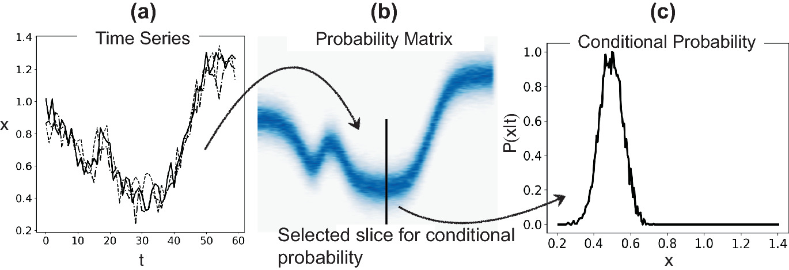

Mathematical Foundations of AI & ML
Unit 8: The Probabilistic View of Learning
Title + Unit 8 positioning
- Units 1–7 built the optimization and generalization framework for learning.
- Unit 8 introduces the probabilistic foundations that underlie everything.
- Probability is the language of uncertainty — and learning is fundamentally about reasoning under uncertainty.
Recap: what risk minimization assumes
- Unit 1: \(\hat{\boldsymbol{\theta}} = \arg\min_{\boldsymbol{\theta}} \mathbb{E}_{(\mathbf{x},y) \sim P}[L(f_{\boldsymbol{\theta}}(\mathbf{x}), y)]\).
- The expectation is over a probability distribution \(P\) of data.
- Until now, we treated this as a mathematical abstraction. Now we make it concrete.
Learning outcomes for Unit 8
By the end of this lecture, students can:
- classify uncertainty as aleatory or epistemic and explain why this matters,
- write the Gaussian in 1D and multivariate form and explain its maximum-entropy property,
- derive the MLE for Gaussian parameters and connect it to MSE minimization,
- apply Bayes’ theorem to update prior beliefs into posterior distributions.
Why probability is the language of learning
- Data is inherently noisy — repeated measurements give different results.
- Models are uncertain — finite data cannot determine parameters exactly.
- Probability provides a consistent, rigorous framework for quantifying both.
- Without probability, we cannot define what “learning from data” means.
Aleatory uncertainty — definition
- Aleatory (from Latin alea = dice): irreducible randomness in the data-generating process.
- Examples: thermal noise in sensors, quantum measurement, turbulent flow variability.
- No amount of additional data or better models can eliminate aleatory uncertainty.
- It sets a floor on achievable prediction error (the Bayes error from Unit 7).
Epistemic uncertainty — definition
- Epistemic (from Greek episteme = knowledge): uncertainty from limited knowledge.
- Reducible by collecting more data, improving the model, or adding features.
- Examples: parameter uncertainty with small \(N\), model misspecification, missing variables.
- Epistemic uncertainty decreases as the training set grows.
Why the distinction matters
%%| align: center
graph TD
U[Total Uncertainty] --> A[Aleatory]
U --> E[Epistemic]
A --> A1[Irreducible Noise]
A --> A2[Bayes Error Floor]
E --> E1[Reducible by Data]
E --> E2[Model Uncertainty]
style A fill:#f96,stroke:#333
style E fill:#69f,stroke:#333- Aleatory uncertainty: set appropriate error bars; do not waste resources trying to reduce it.
- Epistemic uncertainty: invest in data collection or model improvement.
- Confusing the two leads to wasted effort (trying to reduce noise) or false confidence (ignoring model uncertainty).
- Engineering systems must handle both types appropriately [@neuer2024machine].
Interactive: Aleatory vs. Epistemic Uncertainty
//| echo: false
//| panel: input
viewof n_samples_unc = Inputs.range([5, 500], {value: 20, step: 1, label: "Sample Size (N) 📉"})
viewof aleatory_noise = Inputs.range([0, 2], {value: 0.5, step: 0.1, label: "Aleatory Noise (σ) 🎲"})//| echo: false
true_func = (x) => Math.sin(x * Math.PI) + 0.5 * x;
// Generate Data
unc_data = {
const points = [];
const rng = d3.randomNormal(0, aleatory_noise);
for (let i = 0; i < n_samples_unc; i++) {
const x = d3.randomUniform(-2, 2)();
points.push({x: x, y: true_func(x) + rng()});
}
return points.sort((a,b) => a.x - b.x);
}
// Fit a simple polynomial (degree 3) for the epistemic uncertainty band
// Instead of complex regression, let's just use a confidence interval approach
// width of CI shrinks as 1 / sqrt(N)
unc_ci_width = aleatory_noise * 1.96 / Math.sqrt(n_samples_unc);
Plot.plot({
width: 800,
height: 400,
x: {domain: [-2.1, 2.1], label: "x"},
y: {domain: [-3, 3], label: "y"},
marks: [
// True function
Plot.line(d3.range(-2, 2.1, 0.1), {x: d => d, y: d => true_func(d), stroke: "gray", strokeDasharray: "4,4", title: "True Process"}),
// Epistemic Uncertainty Band
Plot.areaY(d3.range(-2, 2.1, 0.1), {
x: d => d,
y1: d => true_func(d) - unc_ci_width,
y2: d => true_func(d) + unc_ci_width,
fill: "steelblue",
fillOpacity: 0.3,
title: "Epistemic Uncertainty (Model Confidence)"
}),
// Aleatory Noise (Data points)
Plot.dot(unc_data, {x: "x", y: "y", r: 4, fill: "red", fillOpacity: 0.6, title: "Observations (Aleatory Noise)"})
]
})- The gray dashed line is the true, hidden process.
- The red dots are sampled data. Their spread around the true process is aleatory uncertainty (irreducible noise).
- The blue band represents our model’s confidence in the mean (epistemic uncertainty).
- Try it: Increase
N. Notice how the blue band shrinks, but the red dots remain scattered.
The sampling process
- Data is a collection of realizations from a random process.
- The sampling rate, resolution, and digitization affect what information is preserved.
- Insufficient sampling introduces systematic errors that no model can correct.
Nyquist-Shannon theorem
- To reconstruct a signal with maximum frequency \(f_{\max}\), the sampling rate must satisfy:
\[ f_s \geq 2 f_{\max} \]
- Below this rate: aliasing — high-frequency components fold into low frequencies.
- Relevance to ML: undersampled data contains phantom patterns that models can overfit to [@neuer2024machine].
Engineering example: sensor data and uncertainty sources
- A temperature sensor measuring a furnace:
- Aleatory: thermal fluctuations (\(\pm 2°C\) at steady state).
- Epistemic: calibration drift (systematic, correctable with recalibration).
- An ML model trained on this data must account for both sources to make reliable predictions.
Random variables and probability distributions
- A random variable \(X\) maps outcomes to numbers.
- Discrete: probability mass function \(P(X = x)\).
- Continuous: probability density function \(p(x)\) where \(\int p(x)\,dx = 1\).
- The PDF gives relative likelihood — not probability — at each point.
Expected value and variance
- Expected value (mean): \(\mu = \mathbb{E}[X] = \int x \, p(x) \, dx\).
- Variance: \(\sigma^2 = \text{Var}[X] = \mathbb{E}[(X - \mu)^2]\).
- Standard deviation: \(\sigma = \sqrt{\text{Var}[X]}\) — same units as \(X\).
- The mean locates the distribution; the variance measures its spread.
Higher moments: skewness and kurtosis
- Skewness \(= \mathbb{E}\left[\left(\frac{X-\mu}{\sigma}\right)^3\right]\): measures asymmetry (0 for symmetric distributions).
- Kurtosis \(= \mathbb{E}\left[\left(\frac{X-\mu}{\sigma}\right)^4\right]\): measures tail heaviness (3 for the Gaussian).
- Excess kurtosis \(= \text{kurtosis} - 3\): deviation from Gaussian tail behavior.
The Gaussian distribution (1D)
\[ p(x \mid \mu, \sigma^2) = \frac{1}{\sqrt{2\pi\sigma^2}} \exp\!\left(-\frac{(x-\mu)^2}{2\sigma^2}\right) \]
- Completely characterized by two parameters: mean \(\mu\) and variance \(\sigma^2\).
- Symmetric, unimodal, bell-shaped.
- The 68-95-99.7 rule: probability within \(1\sigma, 2\sigma, 3\sigma\) of the mean.
Interactive: The 1D Gaussian & Empirical Rule
//| echo: false
//| panel: input
viewof g_mean = Inputs.range([-3, 3], {value: 0, step: 0.1, label: "Mean (μ)"})
viewof g_std = Inputs.range([0.1, 3], {value: 1, step: 0.1, label: "Std Dev (σ)"})
viewof show_intervals = Inputs.checkbox(["1σ (68%)", "2σ (95%)", "3σ (99.7%)"], {label: "Show Intervals", value: ["1σ (68%)"]})//| echo: false
gaussian_pdf = (x, mu, sigma) => {
const variance = sigma * sigma;
return (1 / Math.sqrt(2 * Math.PI * variance)) * Math.exp(-Math.pow(x - mu, 2) / (2 * variance));
}
g_x_vals = d3.range(-6, 6.05, 0.05);
g_data = g_x_vals.map(x => ({x: x, y: gaussian_pdf(x, g_mean, g_std)}));
Plot.plot({
width: 800,
height: 350,
x: {domain: [-6, 6], label: "x"},
y: {domain: [0, 4.2], label: "Density p(x)"},
marks: [
// 3 sigma
show_intervals.includes("3σ (99.7%)") ? Plot.areaY(g_data.filter(d => d.x >= g_mean - 3*g_std && d.x <= g_mean + 3*g_std), {x: "x", y: "y", fill: "#ffbaba", fillOpacity: 0.5}) : null,
// 2 sigma
show_intervals.includes("2σ (95%)") ? Plot.areaY(g_data.filter(d => d.x >= g_mean - 2*g_std && d.x <= g_mean + 2*g_std), {x: "x", y: "y", fill: "#ff7b7b", fillOpacity: 0.6}) : null,
// 1 sigma
show_intervals.includes("1σ (68%)") ? Plot.areaY(g_data.filter(d => d.x >= g_mean - 1*g_std && d.x <= g_mean + 1*g_std), {x: "x", y: "y", fill: "#ff5252", fillOpacity: 0.8}) : null,
// PDF Line
Plot.line(g_data, {x: "x", y: "y", stroke: "white", strokeWidth: 3}),
// Mean Line
Plot.ruleX([g_mean], {stroke: "white", strokeDasharray: "4,4"})
]
})- Modifying the Mean (\(\mu\)) shifts the distribution left or right. It represents the center of mass.
- Modifying the Standard Deviation (\(\sigma\)) stretches the distribution.
- Notice that the peak height drops as it stretches, to ensure the total area (probability) always integrates to 1.
Why the Gaussian is special: maximum entropy
- Among all distributions with a given mean \(\mu\) and variance \(\sigma^2\), the Gaussian has maximum entropy.
- Maximum entropy = maximum uncertainty = fewest additional assumptions.
- Using a Gaussian is therefore the most conservative choice when only mean and variance are known.
- This is the information-theoretic justification for the Gaussian’s ubiquity [@murphy2012machine].
Central Limit Theorem connection
- The sum (or average) of many independent random variables converges to a Gaussian, regardless of their individual distributions.
- This explains why the Gaussian appears everywhere:
- Measurement errors = sum of many small independent perturbations.
- Aggregate quantities in materials science follow approximately Gaussian distributions.
Multivariate Gaussian distribution
\[ p(\mathbf{x} \mid \boldsymbol{\mu}, \boldsymbol{\Sigma}) = (2\pi)^{-d/2} |\boldsymbol{\Sigma}|^{-1/2} \exp\!\left(-\frac{1}{2}(\mathbf{x}-\boldsymbol{\mu})^\top \boldsymbol{\Sigma}^{-1}(\mathbf{x}-\boldsymbol{\mu})\right) \]
- \(\boldsymbol{\mu} \in \mathbb{R}^d\): mean vector. \(\boldsymbol{\Sigma} \in \mathbb{R}^{d \times d}\): covariance matrix (symmetric, positive definite).
- Level sets are ellipsoids whose axes align with eigenvectors of \(\boldsymbol{\Sigma}\).
Covariance matrix: diagonal vs full
- Diagonal \(\boldsymbol{\Sigma}\): features are uncorrelated; ellipsoids are axis-aligned.
- Full \(\boldsymbol{\Sigma}\): features are correlated; ellipsoids are rotated.
- Spherical (\(\boldsymbol{\Sigma} = \sigma^2 \mathbf{I}\)): isotropic; level sets are spheres.
- The eigenvalues of \(\boldsymbol{\Sigma}\) determine the extent along each principal axis.
Interactive: Multivariate Gaussian Covariance
//| echo: false
//| panel: input
viewof cov_var_x = Inputs.range([0.1, 5], {value: 2, step: 0.1, label: "Variance X (σ_x²)"})
viewof cov_var_y = Inputs.range([0.1, 5], {value: 2, step: 0.1, label: "Variance Y (σ_y²)"})
viewof cov_rho = Inputs.range([-0.99, 0.99], {value: 0, step: 0.05, label: "Correlation (ρ)"})//| echo: false
// Generate 2D Gaussian samples
cov_data = {
const N = 500;
const points = [];
// Cholesky decomposition of [[var_x, cov], [cov, var_y]]
// cov = rho * sqrt(var_x * var_y)
const cv = cov_rho * Math.sqrt(cov_var_x * cov_var_y);
const L11 = Math.sqrt(cov_var_x);
const L21 = cv / L11;
const L22 = Math.sqrt(cov_var_y - L21 * L21);
const rng = d3.randomNormal(0, 1);
for (let i = 0; i < N; i++) {
const z1 = rng();
const z2 = rng();
const x = L11 * z1;
const y = L21 * z1 + L22 * z2;
points.push({x: x, y: y});
}
return points;
}
Plot.plot({
width: 600,
height: 600,
x: {domain: [-8, 8], label: "Feature 1 (X)"},
y: {domain: [-8, 8], label: "Feature 2 (Y)"},
aspectRatio: 1,
marks: [
Plot.dot(cov_data, {x: "x", y: "y", r: 3, fill: "steelblue", fillOpacity: 0.4}),
Plot.density(cov_data, {x: "x", y: "y", stroke: "white", thresholds: 5})
]
})- No correlation (\(\rho = 0\)): The contours form axis-aligned ellipses (or circles if variances are equal).
- Positive correlation (\(\rho > 0\)): The ellipses tilt towards the top-right. Knowing \(X\) gives you information that \(Y\) is likely high too!
- Negative correlation (\(\rho < 0\)): The ellipses tilt towards the bottom-right.
Marginal and conditional Gaussians
- A key property: marginals and conditionals of a joint Gaussian are also Gaussian.
- Marginal: integrate out some variables — the result is Gaussian with sub-matrix of \(\boldsymbol{\Sigma}\).
- Conditional: condition on some variables — the result is Gaussian with updated \(\boldsymbol{\mu}\) and reduced \(\boldsymbol{\Sigma}\).
- This closure property makes Gaussian models analytically tractable [@bishop2006pattern].
Checkpoint: interpret the covariance matrix
- Given \(\boldsymbol{\Sigma} = \begin{pmatrix} 4 & 3 \\ 3 & 9 \end{pmatrix}\):
- Feature 1 has variance 4, feature 2 has variance 9.
- Correlation coefficient: \(\rho = 3/\sqrt{4 \cdot 9} = 0.5\) — moderate positive correlation.
- The contour ellipse is tilted toward the upper-right.
The likelihood function
- Given observed data \(\mathcal{D} = \{\mathbf{x}_1, \dots, \mathbf{x}_N\}\) (assumed i.i.d.):
\[ \mathcal{L}(\boldsymbol{\theta}) = p(\mathcal{D} \mid \boldsymbol{\theta}) = \prod_{i=1}^{N} p(\mathbf{x}_i \mid \boldsymbol{\theta}) \]
- \(\mathcal{L}(\boldsymbol{\theta})\) is a function of the parameters \(\boldsymbol{\theta}\), not the data.
- It measures how well \(\boldsymbol{\theta}\) explains the observed data.
Log-likelihood
- Taking the log converts the product into a sum:
\[ \ell(\boldsymbol{\theta}) = \log \mathcal{L}(\boldsymbol{\theta}) = \sum_{i=1}^{N} \log p(\mathbf{x}_i \mid \boldsymbol{\theta}) \]
- Sums are numerically stable and easier to differentiate.
- Maximizing \(\ell(\boldsymbol{\theta})\) gives the same solution as maximizing \(\mathcal{L}(\boldsymbol{\theta})\).
MLE principle
\[ \hat{\boldsymbol{\theta}}_{\text{MLE}} = \arg\max_{\boldsymbol{\theta}} \ell(\boldsymbol{\theta}) \]
- Choose the parameters that make the observed data most probable under the model.
- MLE is the most widely used estimation principle in statistics and machine learning.
- Set \(\nabla_{\boldsymbol{\theta}} \ell(\boldsymbol{\theta}) = 0\) and solve.
Interactive: Maximum Likelihood Estimation
//| echo: false
//| panel: input
viewof mle_mu = Inputs.range([-4, 4], {value: 0, step: 0.1, label: "Guess Mean (μ)"})
viewof mle_sigma = Inputs.range([0.1, 3], {value: 1, step: 0.1, label: "Guess Std Dev (σ)"})//| echo: false
// 5 fixed data points
mle_fixed_data = [{x: -0.5}, {x: 0.2}, {x: 1.1}, {x: 1.5}, {x: 2.2}]
// Calculate true MLE
mle_true_mu = d3.mean(mle_fixed_data, d => d.x);
mle_true_var = d3.mean(mle_fixed_data, d => Math.pow(d.x - mle_true_mu, 2));
mle_true_sigma = Math.sqrt(mle_true_var);
// Calculate log likelihood for current guess
mle_log_likelihood = {
let ll = 0;
for(let p of mle_fixed_data) {
const variance = mle_sigma * mle_sigma;
const pdf = (1 / Math.sqrt(2 * Math.PI * variance)) * Math.exp(-Math.pow(p.x - mle_mu, 2) / (2 * variance));
ll = ll + Math.log(pdf);
}
return ll;
}
// Max log likelihood for the true parameters
mle_max_ll = {
let ll = 0;
for(let p of mle_fixed_data) {
const variance = mle_true_var;
const pdf = (1 / Math.sqrt(2 * Math.PI * variance)) * Math.exp(-Math.pow(p.x - mle_true_mu, 2) / (2 * variance));
ll = ll + Math.log(pdf);
}
return ll;
}
mle_pdf_curve = d3.range(-5, 5.05, 0.05).map(x => {
const variance = mle_sigma * mle_sigma;
return {x: x, y: (1 / Math.sqrt(2 * Math.PI * variance)) * Math.exp(-Math.pow(x - mle_mu, 2) / (2 * variance))}
});
html`
<div style="margin-bottom: 20px;">
<strong>Current Log-Likelihood: <span style="color: ${mle_log_likelihood > mle_max_ll - 0.5 ? '#a8ff9e' : '#ff9e9e'}">${mle_log_likelihood.toFixed(2)}</span></strong><br>
<progress value="${mle_log_likelihood}" min="-30" max="${mle_max_ll}" style="width: 100%; height: 20px; accent-color: ${mle_log_likelihood > mle_max_ll - 0.5 ? '#a8ff9e' : '#ff9e9e'};"></progress>
</div>
`
Plot.plot({
width: 800,
height: 350,
x: {domain: [-5, 5], label: "Data Value (x)"},
y: {domain: [0, 1.5], label: "Likelihood p(x|μ,σ)"},
marks: [
Plot.ruleY([0]),
// The guessed PDF
Plot.areaY(mle_pdf_curve, {x: "x", y: "y", fill: "steelblue", fillOpacity: 0.3}),
Plot.line(mle_pdf_curve, {x: "x", y: "y", stroke: "white", strokeWidth: 2}),
// The data points projected onto the PDF
Plot.dot(mle_fixed_data, {
x: "x",
y: d => {
const variance = mle_sigma * mle_sigma;
return (1 / Math.sqrt(2 * Math.PI * variance)) * Math.exp(-Math.pow(d.x - mle_mu, 2) / (2 * variance));
},
r: 6, stroke: "#ff7b7b", fill: "none", strokeWidth: 2
}),
// Droplines to axis
Plot.ruleX(mle_fixed_data, {
x: "x",
y1: 0,
y2: d => {
const variance = mle_sigma * mle_sigma;
return (1 / Math.sqrt(2 * Math.PI * variance)) * Math.exp(-Math.pow(d.x - mle_mu, 2) / (2 * variance));
},
stroke: "#ff7b7b", strokeDasharray: "2,2"
}),
// Data points on axis
Plot.dot(mle_fixed_data, {x: "x", y: 0, r: 6, fill: "#ff7b7b"})
]
})- Adjust the Mean (\(\mu\)) and Std Dev (\(\sigma\)) to try and trap the red data points under the highest part of the blue curve.
- Watch the Log-Likelihood gauge increase.
- The red circles show the individual likelihood \(p(x_i|\mu,\sigma)\). The product of these heights determines the log-likelihood (converted to a sum).
- Maximizing log-likelihood means pushing the curve up directly over the data points without spreading it too thin!
MLE for Gaussian mean
- Gaussian log-likelihood (with known \(\sigma^2\)):
\[ \ell(\mu) = -\frac{N}{2}\log(2\pi\sigma^2) - \frac{1}{2\sigma^2}\sum_{i=1}^{N}(x_i - \mu)^2 \]
- Differentiate w.r.t. \(\mu\), set to zero:
\[ \hat{\mu}_{\text{MLE}} = \frac{1}{N}\sum_{i=1}^{N} x_i = \bar{x} \]
- The MLE for the mean is the sample mean — intuitive and unbiased.
MLE for Gaussian variance
- Differentiate w.r.t. \(\sigma^2\):
\[ \hat{\sigma}^2_{\text{MLE}} = \frac{1}{N}\sum_{i=1}^{N}(x_i - \hat{\mu})^2 \]
- This is the biased sample variance (divides by \(N\), not \(N-1\)).
- The bias vanishes as \(N \to \infty\) — MLE is consistent.
- For small \(N\), the unbiased estimator (\(N-1\)) is often preferred.
MLE and MSE: the connection
- For a regression model \(y = f_{\boldsymbol{\theta}}(\mathbf{x}) + \epsilon\) with \(\epsilon \sim \mathcal{N}(0, \sigma^2)\):
\[ \ell(\boldsymbol{\theta}) = -\frac{N}{2}\log(2\pi\sigma^2) - \frac{1}{2\sigma^2}\sum_{i=1}^{N}(y_i - f_{\boldsymbol{\theta}}(\mathbf{x}_i))^2 \]
- Maximizing \(\ell(\boldsymbol{\theta})\) w.r.t. \(\boldsymbol{\theta}\) is equivalent to minimizing MSE.
- This provides the probabilistic justification for using MSE as a loss function.
MLE for multivariate Gaussian
- For \(\mathbf{x}_i \in \mathbb{R}^d\):
\[ \hat{\boldsymbol{\mu}} = \frac{1}{N}\sum_{i=1}^{N}\mathbf{x}_i, \quad \hat{\boldsymbol{\Sigma}} = \frac{1}{N}\sum_{i=1}^{N}(\mathbf{x}_i - \hat{\boldsymbol{\mu}})(\mathbf{x}_i - \hat{\boldsymbol{\mu}})^\top \]
- Direct extension of the 1D case to vectors and matrices [@murphy2012machine].
- Requires \(N > d\) for \(\hat{\boldsymbol{\Sigma}}\) to be invertible.
MLE: properties and limitations
- Consistency: \(\hat{\theta}_{\text{MLE}} \to \theta_{\text{true}}\) as \(N \to \infty\).
- Efficiency: achieves the lowest possible variance among unbiased estimators (Cramér-Rao bound).
- Limitation: can overfit with small \(N\) — MLE has no built-in regularization.
- MLE treats all parameter values as equally plausible before seeing data.
Robustness: the outlier problem
- The Gaussian has light tails — extreme values are extremely unlikely under the model.
- When outliers are present, MLE distorts \(\hat{\mu}\) and inflates \(\hat{\sigma}^2\) to accommodate them.
- A single outlier can shift the mean by \(O(1/N)\) of its magnitude.
- Need: a distribution with heavier tails that accommodates outliers without distortion.
Student’s t-distribution for robust estimation
- The Student’s t-distribution has a parameter \(\nu\) (degrees of freedom) controlling tail heaviness.
- \(\nu \to \infty\): converges to Gaussian. \(\nu = 1\): Cauchy distribution (very heavy tails).
- MLE with Student’s t automatically downweights outliers.
- Practical recommendation: use \(\nu \approx 4{-}10\) for moderate robustness [@murphy2012machine].
Bayes’ theorem — statement
\[ p(\boldsymbol{\theta} \mid \mathcal{D}) = \frac{p(\mathcal{D} \mid \boldsymbol{\theta}) \, p(\boldsymbol{\theta})}{p(\mathcal{D})} \]
- Posterior \(p(\boldsymbol{\theta} \mid \mathcal{D})\): what we believe about \(\boldsymbol{\theta}\) after seeing data.
- Likelihood \(p(\mathcal{D} \mid \boldsymbol{\theta})\): how probable the data is under each \(\boldsymbol{\theta}\).
- Prior \(p(\boldsymbol{\theta})\): what we believed before seeing data.
- Evidence \(p(\mathcal{D})\): normalizing constant.
Components of Bayes’ theorem
- The prior encodes domain knowledge or assumptions (e.g., “weights should be small”).
- The likelihood is the same function used in MLE — it connects data to parameters \(\boldsymbol{\theta}\).
- The posterior combines both: it is a compromise between prior knowledge and data evidence.
- More data → posterior dominated by likelihood. Less data → posterior dominated by prior.
The evidence (marginal likelihood)
\[ p(\mathcal{D}) = \int p(\mathcal{D} \mid \boldsymbol{\theta}) \, p(\boldsymbol{\theta}) \, d\boldsymbol{\theta} \]
- Integrates the likelihood over all possible parameter values, weighted by the prior.
- Ensures the posterior integrates to 1.
- Often intractable for complex models — motivates approximation methods (MCMC, variational inference).
- Also used for model comparison: models with higher evidence explain the data better.
Bayesian inference for Gaussian mean (known variance)
- Prior: \(\mu \sim \mathcal{N}(\mu_0, \sigma_0^2)\).
- Likelihood: \(x_i | \mu \sim \mathcal{N}(\mu, \sigma^2)\) (known \(\sigma^2\)).
- Posterior: \(\mu | \mathcal{D} \sim \mathcal{N}(\mu_N, \sigma_N^2)\) where:
\[ \mu_N = \frac{\sigma^2 \mu_0 + N \sigma_0^2 \bar{x}}{\sigma^2 + N \sigma_0^2}, \quad \sigma_N^2 = \frac{\sigma^2 \sigma_0^2}{\sigma^2 + N \sigma_0^2} \]
- This is a conjugate pair: Gaussian prior + Gaussian likelihood = Gaussian posterior [@bishop2006pattern].
Posterior update: visual intuition
- Before data (\(N=0\)): posterior = prior (wide, uncertain).
- After a few points (\(N=5\)): posterior narrows, shifts toward sample mean.
- Large sample (\(N=100\)): posterior is very narrow, centered near \(\bar{x}\).
- As \(N \to \infty\): posterior concentrates at \(\hat{\mu}_{\text{MLE}}\) — the prior washes out.
Interactive: Bayesian Posterior Update
//| echo: false
//| panel: input
viewof bayes_prior_mu = Inputs.range([-5, 5], {value: 0, step: 0.1, label: "Prior Mean (μ₀)"})
viewof bayes_prior_var = Inputs.range([0.1, 10], {value: 3, step: 0.1, label: "Prior Var (σ₀²)"})
viewof bayes_data_mu = Inputs.range([-5, 5], {value: 2.5, step: 0.1, label: "Data Mean (Sample x̄)"})
viewof bayes_data_var = Inputs.range([0.1, 10], {value: 1, step: 0.1, label: "Data Noise (σ²)"})
viewof bayes_N = Inputs.range([0, 50], {value: 3, step: 1, label: "Samples Observed (N)"})//| echo: false
// Calculate Posterior params
bayes_post_var = 1.0 / ( (1.0/bayes_prior_var) + (bayes_N/bayes_data_var) )
bayes_post_mu = bayes_post_var * ( (bayes_prior_mu/bayes_prior_var) + (bayes_N * bayes_data_mu / bayes_data_var) )
bayes_x_vals = d3.range(-8, 8.05, 0.05);
bayes_curves = {
const data = [];
for(let x of bayes_x_vals) {
// Prior
const p_prior = (1 / Math.sqrt(2 * Math.PI * bayes_prior_var)) * Math.exp(-Math.pow(x - bayes_prior_mu, 2) / (2 * bayes_prior_var));
// Likelihood (conceptually, the likelihood of the mean parameter given the data)
// Scaled for visualization so it fits on same plot
const likelihood_var = bayes_data_var / (bayes_N > 0 ? bayes_N : 0.0001);
const p_like_unscaled = (1 / Math.sqrt(2 * Math.PI * likelihood_var)) * Math.exp(-Math.pow(x - bayes_data_mu, 2) / (2 * likelihood_var));
// Scale likelihood to have max height ~ 1 for visual clarity against prior
const p_like = bayes_N === 0 ? 0 : p_like_unscaled * Math.sqrt(2 * Math.PI * likelihood_var) * 0.5;
// Posterior
const p_post = (1 / Math.sqrt(2 * Math.PI * bayes_post_var)) * Math.exp(-Math.pow(x - bayes_post_mu, 2) / (2 * bayes_post_var));
data.push({x: x, val: p_prior, type: "Prior P(θ)"});
if (bayes_N > 0) data.push({x: x, val: p_like, type: "Likelihood (scaled)"});
data.push({x: x, val: p_post, type: "Posterior P(θ|D)"});
}
return data;
}
Plot.plot({
width: 800,
height: 400,
x: {domain: [-8, 8], label: "Mean Parameter (μ)"},
y: {domain: [0, 1.2], label: "Density"},
color: {
domain: ["Prior P(θ)", "Likelihood (scaled)", "Posterior P(θ|D)"],
range: ["#888888", "#5ca7ff", "#ff4d4d"]
},
marks: [
Plot.line(bayes_curves, {x: "x", y: "val", stroke: "type", strokeWidth: 3}),
Plot.areaY(bayes_curves, {x: "x", y: "val", fill: "type", fillOpacity: 0.15}),
// Highlight MAP / Data Mean points on axis
Plot.ruleX([bayes_prior_mu], {stroke: "#888888", strokeDasharray: "4,4"}),
bayes_N > 0 ? Plot.ruleX([bayes_data_mu], {stroke: "#5ca7ff", strokeDasharray: "4,4"}) : null,
Plot.ruleX([bayes_post_mu], {stroke: "#ff4d4d", strokeWidth: 2})
]
})- \(N = 0\): The Posterior (red) perfectly matches the Prior (gray).
- Small \(N\): The Posterior is a compromise between the Prior and the Data Likelihood (blue).
- Large \(N\): The Likelihood narrows dramatically, pulling the Posterior entirely towards the Data Mean (\(2.5\)). The Prior is “washed out”.
- Strong Prior (small \(\sigma_0^2\)): The Prior resists the data pull much longer. Try changing Prior Var to 0.1 and notice how much data it takes to shift the belief!
Bayesian vs frequentist comparison
| Aspect | Frequentist | Bayesian |
|---|---|---|
| Parameters | Fixed, unknown | Random variables |
| Inference | Point estimate + CI | Full posterior distribution |
| Prior knowledge | Not incorporated | Formally included |
| Uncertainty | Sampling variability | Posterior width |
| Interpretation | Long-run frequency | Degree of belief |
- Frequentist: Objective, based on repeated trials.
- Bayesian: Subjective, based on evidence update.
- Choice: Often depends on data availability and prior confidence.
Credible interval vs confidence interval
- 95% Bayesian credible interval: “Given the data, there is a 95% probability that \(\theta\) lies in this interval.”
- 95% frequentist confidence interval: “If we repeated the experiment many times, 95% of such intervals would contain the true \(\theta\).”
- The Bayesian interpretation is often more natural for engineering decisions.
MAP estimation
- Maximum A Posteriori: find the mode of the posterior:
\[ \hat{\boldsymbol{\theta}}_{\text{MAP}} = \arg\max_{\boldsymbol{\theta}} \, p(\boldsymbol{\theta} \mid \mathcal{D}) = \arg\max_{\boldsymbol{\theta}} \left[\log p(\mathcal{D} \mid \boldsymbol{\theta}) + \log p(\boldsymbol{\theta})\right] \]
- MAP is a point estimate — it summarizes the posterior by its peak.
- MAP = MLE when the prior is uniform (non-informative).
MAP and regularization
- Gaussian prior \(p(\boldsymbol{\theta}) \propto \exp(-\frac{\lambda}{2}\|\boldsymbol{\theta}\|_2^2)\): MAP = Ridge regression.
- Laplace prior \(p(\boldsymbol{\theta}) \propto \exp(-\lambda\|\boldsymbol{\theta}\|_1)\): MAP = Lasso regression.
- Regularization is not an ad-hoc trick — it has a principled Bayesian justification.
- The regularization strength \(\lambda\) corresponds to the prior precision (inverse variance).
When to be Bayesian vs frequentist
- Small data, safety-critical: Bayesian — uncertainty quantification is essential.
- Large data, fast iteration: MLE/frequentist — posterior approximates MLE anyway.
- Model comparison: Bayesian evidence is a principled selection criterion.
- Engineering practice: often a pragmatic mix — MLE for training, Bayesian for uncertainty.
Predictive distribution
- Instead of predicting with a point estimate, integrate over parameter uncertainty:
\[ p(\mathbf{x}_{\text{new}} \mid \mathcal{D}) = \int p(\mathbf{x}_{\text{new}} \mid \boldsymbol{\theta}) \, p(\boldsymbol{\theta} \mid \mathcal{D}) \, d\boldsymbol{\theta} \]
- The predictive distribution is wider than the distribution under a point estimate.
- It honestly reflects both data noise (aleatory) and parameter uncertainty (epistemic).
Checkpoint: update a prior
- Setup: Prior \(\mu_0 = 0\), \(\sigma_0^2 = 10\). Known noise \(\sigma^2 = 1\). Five observations with \(\bar{x} = 3.2\).
- Compute \(\mu_N\) and \(\sigma_N^2\).
- \(\sigma_N^2 = \frac{1 \cdot 10}{1 + 5 \cdot 10} = \frac{10}{51} \approx 0.196\).
- \(\mu_N = \frac{1 \cdot 0 + 5 \cdot 10 \cdot 3.2}{1 + 50} = \frac{160}{51} \approx 3.14\).
Stochastic enrichment of input data
- Add Gaussian noise to training inputs to simulate measurement uncertainty:
- \(\tilde{x}_i = x_i + \epsilon\), \(\epsilon \sim \mathcal{N}(0, \sigma_{\text{noise}}^2)\).
- This augments the training set and makes the model robust to input perturbations.
- Especially effective when the noise level matches real deployment conditions [@neuer2024machine].

Mixture-density networks
- Standard networks predict a single value \(\hat{y}\) — they cannot express multi-modal uncertainty.
- A mixture-density network predicts the parameters of a Gaussian mixture:
\[ p(y|x) = \sum_{k=1}^{K} \pi_k(x) \, \mathcal{N}(y | \mu_k(x), \sigma_k^2(x)) \]
- Mixing coefficients \(\pi_k\), means \(\mu_k\), and variances \(\sigma_k^2\) are all functions of input \(x\) [@neuer2024machine].

Process corridors via 2D histograms
- In manufacturing, define acceptable parameter ranges as probability contours.
- A 2D histogram of (process parameter, quality metric) shows the process corridor.
- Points outside the corridor flag anomalies or process drift.
- This converts probabilistic thinking into actionable quality control [@neuer2024machine].

Materials example: property prediction with uncertainty
- Predicting tensile strength of a new alloy composition.
- Point prediction: 450 MPa. But how confident are we?
- With uncertainty: 450 ± 35 MPa (95% credible interval).
- Epistemic uncertainty is large in composition regions far from training data — flagging extrapolation.
Practical diagnostic: calibration plots
- A well-calibrated model’s predicted \(p\)% confidence intervals should contain \(p\)% of test points.
- Plot: predicted confidence level vs observed coverage.
- Perfect calibration = diagonal line.
- Overconfident models: predicted intervals are too narrow (points fall outside too often).
Lecture-essential vs exercise content split
- Lecture: uncertainty taxonomy, Gaussian distribution, MLE derivation, Bayesian framework, MAP-regularization connection.
- Exercise: noise injection and Nyquist demo, MLE implementation in NumPy, Bayesian posterior updating, MLE-MSE equivalence proof, calibration plots.
Exam-aligned summary: 10 must-know statements
- Aleatory uncertainty is irreducible; epistemic uncertainty is reducible with more data.
- The Gaussian is the maximum-entropy distribution for given mean and variance.
- MLE maximizes the probability of the observed data under the model.
- For Gaussian noise, MLE is equivalent to MSE minimization.
- Bayes’ theorem: posterior \(\propto\) likelihood \(\times\) prior.
- Conjugate priors yield closed-form posteriors (e.g., Gaussian-Gaussian).
- MAP with a Gaussian prior is equivalent to Ridge regression.
- The predictive distribution integrates over parameter uncertainty.
- Student’s t-distribution provides robustness to outliers.
- Calibration plots assess whether predicted uncertainties match observed frequencies.
References + reading assignment for next unit
- Required reading before Unit 9:
- Neuer: Ch. 2.2–2.3
- Murphy: Ch. 2 (probability review)
- Optional depth:
- Bishop: Ch. 2.1–2.3 (Gaussian and Bayesian inference)
- Murphy: Ch. 4 (multivariate Gaussian)
- Next unit: Representation Learning — how models discover useful features from raw data.